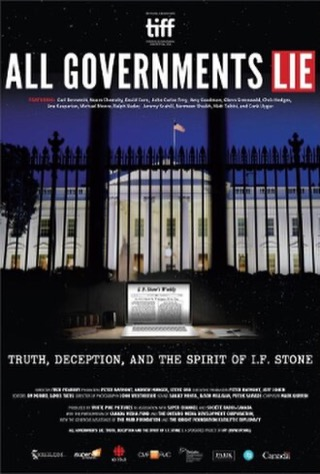

About the film

I.F. Stone was a legend in investigative reporting. Operating from the assumption that “all governments lie,” Stone combed through the government’s own records to expose falsehoods surrounding some of the biggest stories of his generation from the 1950s through the 1970s. This film follows adversarial journalists who operate in Stone’s spirit–Amy Goodman, Glenn Greenwald, Jeremy Scahill, and Matt Taibbi– and whose critical, investigative reporting provides alternatives to mainstream news outlets.
At the festival
- 2016 US Premiere · Friday, October 7, 2016 · 6:00 PM · National Portrait GalleryPost-screening discussion to follow with: Moderator, Ray Suarez, journalist; Fred Peabody, director; Peter Raymont, producer; Dan Froomkin, Washington editor, The Intercept; Myra MacPherson, author, All Governments Lie; Peter Stone, journalist and grandson to I.F. Stone.